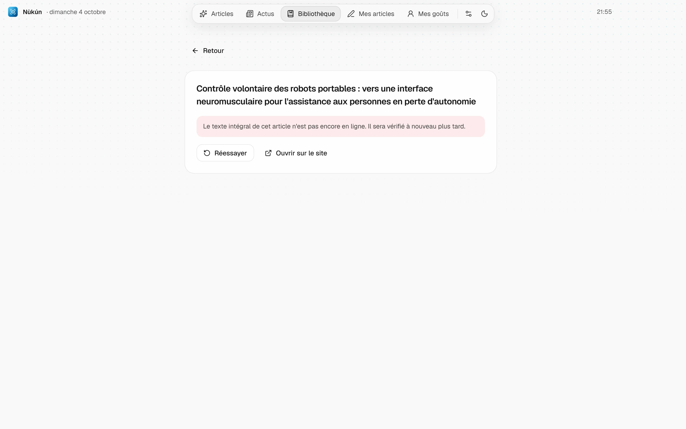

Aide
Ce qui n'est pas évident au premier coup d'œil : où se règle chaque chose, ce que veulent dire les messages, et quoi faire quand un article ne s'ouvre pas.
Installer
- Télécharge Nukun-Setup.exe sur la page des versions.
- Lance-le. Si Windows affiche « Windows a protégé votre ordinateur », clique sur Informations complémentaires puis Exécuter quand même. L'app n'est pas signée par un certificat payant, c'est la seule raison de cet avertissement.
- L'installateur te demande où installer l'app et s'il faut créer une icône sur le Bureau. Elle apparaît dans tous les cas dans le menu Démarrer.
Il faut Windows 10 ou 11 en 64 bits, 4 Go de mémoire et environ 1 Go d'espace libre.
Premier lancement
Choisis d'abord la langue de l'app, français ou anglais. C'est aussi la langue dans laquelle les articles sont traduits et expliqués. Choisis ensuite tes centres d'intérêt : dans le catalogue, ou en tapant n'importe quel sujet dans la recherche.
Un court tutoriel présente ensuite les réglages. Tu peux le revoir plus tard depuis Réglages, section Tutoriel.
Le premier fil met quelques minutes
L'app interroge toutes les sources, puis télécharge une seule fois un modèle de 130 Mo qui sert à comprendre le sens des articles. Si la connexion coupe, le téléchargement reprend là où il s'était arrêté. Avec le mode Données mobiles, ce modèle n'est pas téléchargé et les recommandations se font sur les mots seulement.
La clé Google, pour traduire
Les traductions et les explications passent par Gemini, l'IA de Google. Son quota gratuit suffit pour un usage quotidien, mais il faut ta propre clé.
- Ouvre aistudio.google.com/apikey et connecte-toi avec ton compte Google.
- Clique sur Create API key et copie la clé.
- Dans Nùkún, ouvre Réglages, section Intelligence artificielle, et colle-la dans le champ de la clé Gemini.
Aucune carte bancaire n'est demandée. La clé reste sur ton PC.
Les autres modes d'IA
Dans la même section, tu choisis qui fait le travail :
- Gemini seul : gratuit avec ta clé. L'IA locale prend le relais si le quota du jour est atteint.
- IA locale seule : gratuit et hors ligne grâce à Ollama, sur ta carte graphique. Plus lent, moins précis.
- Mon abonnement Claude : passe par Claude Code s'il est installé et connecté sur ce PC.
- Hybride : Gemini traduit le gros du texte, Claude reprend les passages les plus techniques.
Où régler quoi
| Je veux | Où |
|---|---|
| Passer l'app en anglais | Réglages, section Langue. Les traductions déjà faites dans l'autre langue restent en mémoire. |
| Ajouter ou retirer un centre d'intérêt | Réglages, section Centres d'intérêt, ou le bouton Modifier en haut du fil. |
| Voir ce que l'app a appris de moi | La page Mes goûts, dans la barre de gauche. |
| Repartir de zéro | Mes goûts, bouton Réinitialiser. Tes sauvegardes et tes notes sont gardées. |
| Changer d'IA ou coller ma clé | Réglages, section Intelligence artificielle. |
| Consommer moins de données | Réglages, section Économiser les données. Les articles ne sont téléchargés qu'à l'ouverture, les cartes restent sans image jusque-là. |
| Activer ou couper une source | Réglages, section Sources scientifiques. |
| Changer la fréquence d'actualisation | Réglages, section Sources scientifiques, réglage Actualiser toutes les… heures. |
| Passer en thème sombre | L'icône de lune en bas de la barre de gauche. |
| Agrandir le texte d'un article | Les boutons A plus petit et A plus grand, en haut du lecteur. |
| Lire l'original ou les deux langues | En haut du lecteur : Traduction, Original ou Côte à côte. |
| Choisir où sont exportés mes textes | Réglages, section Export. |
| Revoir le tutoriel | Réglages, section Tutoriel. |
Les messages, et quoi faire
Un article ne s'ouvre pas

L'IA ne répond pas
Une source ne répond pas
Gestes utiles
- Échap ferme ce qui est ouvert et revient à l'écran précédent.
- Sélectionne un passage dans un article : Expliquer le fait expliquer simplement, Noter l'ajoute à tes notes de lecture.
- Sur une figure, Expliquer cette figure décrit ce qu'elle montre.
- Sur une carte, l'icône d'œil barré veut dire « pas intéressé » : l'algorithme t'en montrera moins comme ça. Le signet sauvegarde l'article dans ta bibliothèque.
- Tout traduire traduit l'article d'un coup, pour le lire plus tard. Sinon seul ce qui s'affiche est traduit.
- Écrire mon article ouvre l'éditeur avec tes notes à côté. Depuis l'éditeur, Relire l'article te ramène à l'article d'origine.
- Dans la bibliothèque, la corbeille retire un article. Une confirmation est demandée.
Mises à jour
Quand une nouvelle version existe, une fenêtre apparaît en bas de l'écran avec un bouton Mettre à jour. Rien ne se télécharge ni ne s'installe sans ton clic. Tes articles, tes notes et tes réglages sont gardés, et tu n'as pas besoin de réinstaller.
Tes données
Tout ce que l'app garde est sur ton PC, dans %APPDATA%\Nukun : profil de lecture, bibliothèque, traductions, notes et réglages. Rien de cela n'est envoyé ailleurs. Seuls les passages à traduire ou à expliquer partent vers l'IA que tu as choisie.
Pour désinstaller, passe par Paramètres de Windows, puis Applications. Pour effacer aussi tes données, supprime ensuite le dossier ci-dessus.
Un problème qui n'est pas décrit ici ? Ouvre un ticket sur GitHub.